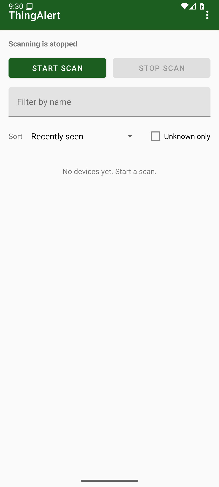

What the app does
- Scans nearby Bluetooth Classic and BLE devices in the foreground.
- Shows a sortable list of current observations with names, signal strength, and metadata.
- Lets you tap a device to inspect its local sighting timeline after relaunch.
unagi is a local-first Android app for spotting nearby Bluetooth devices, keeping a durable on-device history, and making scan state obvious when Bluetooth is off or permissions are denied. No cloud. No remote logging by default.
Observed device identifiers are treated as observations, not ground truth identity. Addresses can rotate. Names can drift. unagi keeps the MVP intentionally pragmatic: short scans, clear permission states, local history, and no background battery drain.

The website links to a stable filename, downloads/unagi-debug.apk, which is copied from Gradle's debug output after each build.
The app name is doing the same joke the show did: awareness, panic, and a little confusion about whether anyone is actually talking about eel.
"Unagi."
The quiet, overconfident version of situational awareness.
"Ah, salmon skin roll."
Because somebody always misunderstands the brief.
"Danger!"
Useful when Bluetooth goes sideways, permissions disappear, or a scan stops being fun.
unagi is built without Android Studio. The expected path is JDK 17, Android SDK command-line tools, Gradle wrapper, and a staged debug APK for the site.
scripts/setup-android-sdk.adb devices sees your phone../gradlew assembleDebugscripts/stage-apkdownloads/unagi-debug.apk.